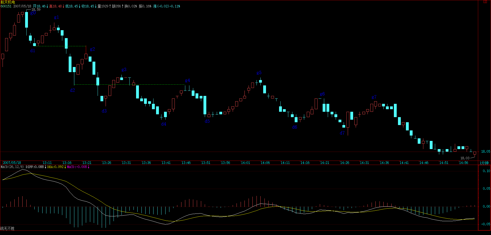
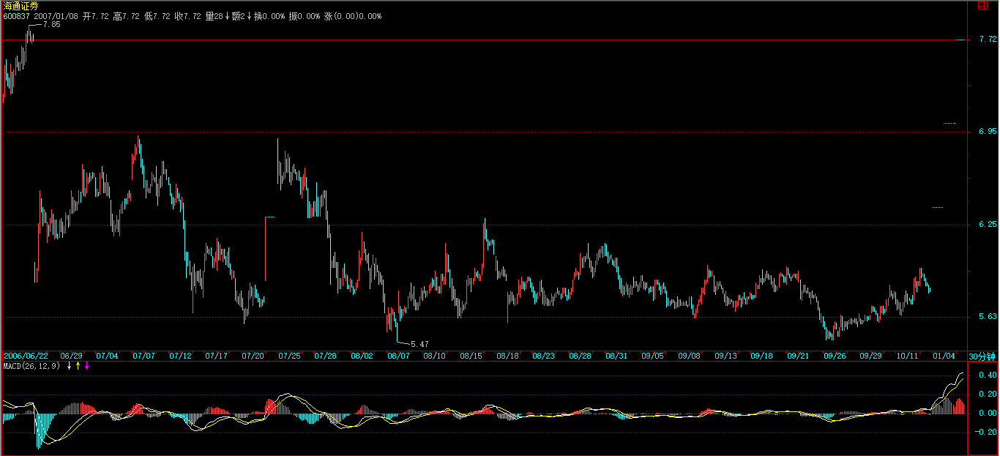
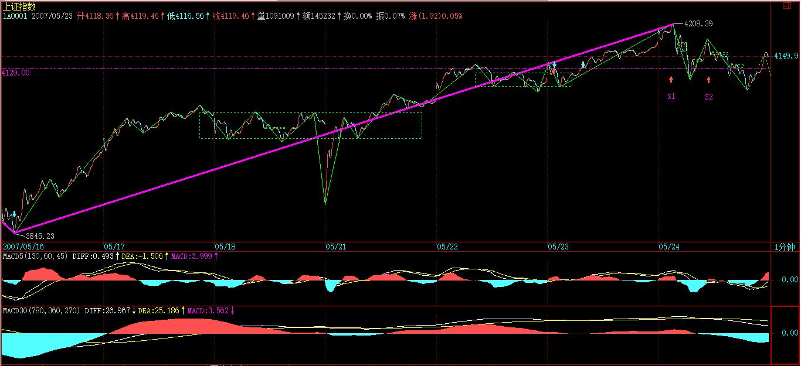

(2007-05-24 01:37:31)
今天本不该说股票，连续两天都说股票也太浪费资源，不过回帖里有人提出这个问题很有代表性，所以有必要回答一下。【韶山映山红】这个问题在53课笔记的末尾部分的2007-5-23 16:41。】
今天等着看足球，十分无聊，上网419，还不如把这帖子给写了，先贴出来，让等看球的先消耗点无聊的时间。【韶山映山红】2007年欧洲冠军联赛决赛于2007年5月23日在希腊雅典奥林匹克体育场举行，意大利的AC米兰与英格兰的利物浦对决。缠师是利物浦球迷。】
【韶山映山红】博客原文就这样穿插了这篇博文的链接。】
注意，看下面分析之前，不能太饿也不能太饱，不能太兴奋不能太不兴奋，否则一定晕。
由于一般的图都没有这么复杂，所以看完之后千万别信心受到打击，而是应该信心百倍，知道只要精通本ID的理论，这么细微、古怪的图，都可以当下精确分析并指导操作，从而对本ID理论关于走势的绝对把握性有一个更清楚的认识。后面就是要多看图，多磨练的问题了。
如果概念不清，看到这样的图，基本都要晕头转向。好了，大家开始深呼吸，放松脑筋，别抽筋了。
【韶山映山红】600151航天机电】
【韶山映山红】zs_ex1.gif（2007-05-23 18:03）】
这图有个条件，就是d1=g2，d2=g4。其实这条件有还是没有，并不影响分析，但有这些条件，就会增加分析的难度。
这里，就从18.5元（设为g0）开始分析。【韶山映山红】这个价格实际上是18.59元。】

昨天刚好谈到，当你以某级别分析图形时，就先假设了次级别是线段。【韶山映山红】这里说的线段不是初始化函数的那个笔构成的线段，只是“看成没有内部结构的线段”。】这图里，除了最后一个，【韶山映山红】这里的“最后一个”是d7-g7，不是g7后面那一段g7-d8。】其余每一个dngn、gndn+1都是1分钟以下级别的，所以都可以看成没有内部结构的线段。【韶山映山红】这时候认为d7-g7是1分钟级别的走势，其他的更低一个级别。】

【韶山映山红】 线段进化史03
这一课是线段的正式使用。重点：次级别走势，次级别以下级别走势，都可以看成没有内部结构的线段。
】
我们就从g0开始，当下地进入图形中。
显然，当下走到g1时，由于只有两段，所以不形成任何中枢，【韶山映山红】这时候走势一路上行，中枢先观察“下上下”的情况，所以这里看一眼下、上的两段。】当然，如果你是一个分笔操作者，那么g1就构成一个第二类卖点了。【韶山映山红】g0之前是一个“a+A+b+B+c”结构，g0新高，d1成为B中枢的三买，g1没有新高，低于g0，所以成了二卖。】
【韶山映山红】分笔级别的操作者，也就是说，操作级别低于1分钟级别。一个1分钟a+A+b+B+c趋势上涨，c走出了三买转二卖的结构，本级别是不操作的，这个二卖属于次级别的操作。★可以做个专题，以后研究。】
当走势发展到d2时，一个1分钟级别的中枢就形成，区间是[d1,g1]。【韶山映山红】这是趋势之后的向下调整，g0-d1-g1-d2构成盘整中枢。】a+A+b+B+c趋势上涨，c之后走出了C中枢，与B中枢有重叠，有B中枢扩展的可能，中枢级别的走势进入中阴阶段。】
后面出现的线段，就要以该区间来决定是中枢震荡还是第三类买卖点。【韶山映山红】“该区间”是指刚才说的中枢(g0d1+d1g1+g1d2)的区间[d1,g1]。后面出现的线段的完全分类只有两种情况：返回中枢区间即为震荡，不回中枢区间即为三卖。这里暂时不会有三买，即使d2g2上穿中枢区间，还是算返回中枢为震荡，这种情况要形成三买也要等更后面的线段g2d3了。】
【韶山映山红】中枢(g0d1+d1g1+g1d2)是线段级别的中阴中枢，这里考察她的第三类买卖点，实际上就是判断中阴阶段的结束。这里g1本来应该创新高，形成中枢次级别的线段类趋势，实际上没有新高，走成二卖，就有了中枢级别转折的风险，d2最后的加速下跌意味着，如果d2-g2不能构成反转，1分钟级别的操作者也该考虑出来了。】
由于d1=g2，那么d2g2这段就属于[d1,g1]中枢的震荡。【韶山映山红】相等也算返回中枢区间了。这样一来，中阴中枢没有出现第三类买卖点，还要继续观察。d2-g2没有构成反转，但g0-d2的非背下跌，能拉回d1，也算是一种强力反弹，后面可能形成二买之后继续上涨，d2准备出来的，到了g2又要暂缓执行，所以缠师说，d1=g2，“其实这条件有还是没有，并不影响分析，但有这些条件，就会增加分析的难度。”】
而到d3g3这段，显然已经不能触及[d1,g1]，【韶山映山红】走到d3，g2-d3对g1-d2是否非背，不好判断了，但也没有明显的背驰，所以g2没有执行的离开，又要考虑在g3执行了。d3-g3的力度不及d2-g2，g3和g2相比走势更平缓了，而且d3g3自己内部更低级别背驰了，所以d3判断“显然已经不能触及[d1,g1]”了。】所以g3就是第三类卖点。【韶山映山红】这里说的三卖对应的中枢是“下上下”回跌中枢(g0d1+d1g1+g1d2)，而不是按照下跌走势选择“上下上”回升中枢(d1g1+g1d2+d2g2)。虽然对后者来说也是三卖。】
【韶山映山红】g3是中阴中枢g0-g2的三卖，意味着，线段类趋势上涨，小转大形成二卖，进入中阴阶段，大级别走势已经确认，二卖次级别操作没走的，这里就是中枢级别的操作了。】当然，这里有中枢扩展的问题，更大级别的中阴中枢在形成中，不排除更大级别先出三买的可能，即使走了，也要继续观察。由于还在a+A+b+B+c的Ｂ中枢附近震荡，如果成本做下来了，清仓的离场可以等这个顶部中阴中枢的三卖。】
当然，如果前面d1>g2，那g2就是第三类卖点了。【韶山映山红】这个三卖对应的中枢是前面的“上下上”中枢(前面+g0d1+d1g1)，g1d2离开，d2g2返回。】g2反弹不上去，就已经可以判断，g0-d3实际上走出来的是一个线段类下跌趋势，虽然不是中阴中枢的三卖，但实际上走出了次级别的V型反转，转折的力度更大。】
【韶山映山红】若禅精舍（陈秋明）：
注意的是，这里说的买点，都是类买点。在实际操作过程中，所有的买卖点都要求至少可以考察一个次级别的走势结构，否则操作精度会打折扣。当然只是在操作级别上考察走势的力度，也是可以的，如果经验足够丰富的话，与考察次级别生长可把握的精度并差不了多少，但还是那个观点，切换一下周期，按一个键就可以有更好的观察视角，为什么不用？
但在操作系统的次级别以下级别，就没必要考察太细了，例如操作级别是30分钟的，一般看到5分钟就完全可以了，除非5分钟级别的走势很剧烈，有更好的操作机会，那么当你去操作5分钟走势段的时候，操作级别其实已经切换到5分钟上面来了，这时当然需要去考察一分钟级别走势。】
其实，由于d1=g2，所以当行情发展到d3，就可以当下地用结合律对走势进行多样性分析。【韶山映山红】如果d1<g2，行情发展到d3，也一样的“可以当下地用结合律对走势进行多样性分析”。但是，如果d1>g2，两个特征序列没有重叠，就不能构成中枢(d1g1+g1d2+d2g2)，这里就只是单边下跌了。注意这里的措辞：这里到d3的时候，分析的中枢依然是（a+A1+A2）+A3+A4，多样性分析才选择a+（A1+A2+A3）+A4。】
这时候，有如下等式：
g0g3【韶山映山红】这里是g0d3，起点和终点。】
=(g0d1+d1g1+g1d2)+d2g2+g2d3【韶山映山红】站在g0的位置向后看，这个回踩中枢(g0d1+d1g1+g1d2)就是所谓的“3段中枢”。】
=g0d1+(d1g1+g1d2+d2g2)+g2d3【韶山映山红】站在g0的位置向后看，这个回升中枢(d1g1+g1d2+d2g2)就是所谓的“5段中枢”。】
括弧里的是中枢。【韶山映山红】两种划分方法的区别在于如何看待g0开始的这一段走势，看做上涨的回调就是前面一种，看做下跌就是后面一种。】
在后一式子看来，该中枢就是[d1，g2]，也就是一个价位，这时候，也并不影响前面关于g3就是第三类卖点的分析。【韶山映山红】两种划分方式的中枢低点ZD都由d1决定，所以这里的两种划分方式不会影响g3的分析。虽然影响了g2的三卖，但是两个位置的三卖，应该也是一种确认的表现。】
而这种分解，比较符合一般的习惯，【韶山映山红】“一般的习惯”是什么呢？前面说了，g0是前一个走势的终点，然后是转折，走势向下，那么将要考察的中枢应该是“上下上”结构的，这就是一般习惯。而“下上下”的g0-d1-g1-d2中枢是上涨走势分析的时候的习惯，也是转折分析的习惯。】所以是可以采取的。【韶山映山红】问题不在于后一种方式是否可以采取，而在于走到g3位置的时候，是否还可以采取前面一种划分组合做分析。在未完成的走势中做当下的分析，两种组合都可以采取。在已经完成的走势划分中，就不该再做第一种组合了。】
显然，以MACD辅助判断，力度上，g1d2>g2d3>g3d4，相对来说，后者都是前者的盘整背驰。【韶山映山红】因为这时候没有形成下跌趋势，不存在趋势背驰。】
当然，在1分钟图上，这种背驰都没有什么操作意义，但如果是日线、甚至年线图上，就有了。【韶山映山红】因为级别太小，挪腾的空间太小，线段类盘整背驰和中枢震荡盘整背驰“没有什么操作意义”。】
【韶山映山红】特征序列考察反弹的力度，非特征序列考察原走势的衰竭。】
分解图形，有一个原则是必须知道的：两个同级别中枢之间必须有次级别的走势连接，【韶山映山红】实际上不是为了要求有一个次级别走势，而是，有次级别的走势连接才能保证两个中枢的方向一致。反过来说，只要保证两个中枢的方向一致，中间有没有次级别走势就不重要了。】
例如，g0d4=g0d1+(d1g1+g1d2+d2g2)+（g2d3+d3g3+g3d4）这样的分解是不被允许的，因为括弧中的两个同级别中枢之间没有次级别的连接。【韶山映山红】一直是连续的走势，就可以要求次级别走势的存在了。】
（注意，这与下面三次级别构成中枢的情况不同，那种情况下，是允许三个括弧相加而之间没有次级别，因为那是扩展成高一级别中枢的情况，和这里两个同级别的情况不同。）【韶山映山红】怎么理解这两种情况下的不同规则呢？两个同级别中枢之间必须有次级别的走势连接，难道跳空就不允许了吗？不是的，这个要求其实只是为了保证两个中枢的方向的一致，因为两个中枢都在一个走势中，不能有相反方向的中枢。中枢扩展成高一级别的情况下，三个中枢肯定要有方向相反啊，所以三次级别构成中枢刚好，中间也就无所谓次级别连接了。】
当行情当下走到d4点时，根据上面的原则，无非有下面两种可能的分解：【韶山映山红】g0开始的走势，走到d4点时，中阴阶段已经结束，向下的走势明朗，所以一开始的那个“下上下”的中枢(g0d1+d1g1+g1d2)，就不再作为中枢考虑了。所以下面公式的区别只是中枢的位置不同，而没有方向不同了。】
g0d4【韶山映山红】这里是g0d4，起点和终点。】
=g0d1+（d1g1+g1d2+d2g2）+g2d3+d3g3+g3d4【韶山映山红】完整的a+A+b形态。这种情况，b、a的背驰判断已经没什么意义了，用g3d4和g2d3比较来判断abc盘整背驰指导操作。】

=g0d1+d1g1+g1d2+（d2g2+g2d3+d3g3）+g3d4【韶山映山红】中枢顺着走势的方向移动一步，把走势碎片扔在前面，方便当下的分析。但不能随意抓三段就拿来组合，要保证中枢方向是回升的“上下上”组合。】
【韶山映山红】这种情况用g3d4和g1d2比较，来判断a+A中枢震荡盘整背驰。g3d4是中枢的离开段，还没有出三卖，处于背驰段状态，】
【韶山映山红】“这里，无论是哪个，最终的结论都是d4点是背驰点，因此该点的意义就大了。”】
d4g4是盘整背驰后的正常反弹，【韶山映山红】g4=g2，g4反弹回到中枢区间，属于a+A盘整背驰之后的正常反弹。】
针对上面第一种分解，这只是第三类卖点后向一个新的同级中枢移动或形成更高级别中枢的一个中间状态，【韶山映山红】第一种分解，=g0d1+（d1g1+g1d2+d2g2）+g2d3+d3g3+g3d4。三卖g3确认前面的中枢（d1g1+g1d2+d2g2）的完成，延伸不可能了，然后中枢只有两种走势：“向一个新的同级中枢移动”则形成同级别的趋势，扩张则“形成更高级别中枢”。是新生还是扩张，这时候还无法确定，所以d4g4和g4d5这两段都是中间状态。这时候虽然已经可以判断中枢扩张升级了，但是高级别中枢还没有完成，只要走势没有完成，就依然存在各种可能，不能预言。g4d5依然可以继续下行演化出下跌趋势来。】g4d5这段也是；【韶山映山红】g4d5这段也是“中间状态”。虽然d5止跌了，反弹的情况还不知道。】

【韶山映山红】有同学说：“很多时在d5～g5就冲进去了，激进的甚至在在d4~g4就杀入了，”所以缠师才专门写了这一课。我觉得，在实盘的时候选择d4作为一买介入并没有错，我们都可能有同样的决策，只是买入后遭遇了盘整，触发了保护机制，需要退出。这个保护机制在《教你炒股票13：不带套的操作不是好操作！》说得很清楚，还没有遇到几个人看明白了那一课，都以为缠师说的“套”是被套牢的套。缠师最早课程那么“污”，套怎么可能是套牢套，而不是安全套呢。】
【韶山映山红】神燕对d4是一买有意见，因为这里不是趋势。这里需要鉴别一下：趋势背驰是一买，一买不只是趋势背驰。划重点：一买和趋势背驰不能划等号。走完一个中枢的时候，或者说a+A+b的时候有没有一买？前面课程的笔记有阐述。我们选股的时候可以默默的等待趋势背驰的一买，而长线持股部分仓位做T的时候，是不能放弃盘整背驰的，任何一个买卖点都需要积极关注。】

针对第二种分解，由于g4=d2，所以d4g4是（d2g2+g2d3+d3g3）的中枢震荡，d5g5这段也是。【韶山映山红】第二种分解，=g0d1+d1g1+g1d2+（d2g2+g2d3+d3g3）+g3d4。d4g4是（d2g2+g2d3+d3g3）的中枢震荡，g4=d2，中枢延伸。d5g5依然是中枢延伸。】

有人可能要问，在这种情况下，采取哪种分解？【韶山映山红】这一段说的是中枢延伸到d4g4的时候。】
其实，哪一种都可以，但第一种，由于在中间状态中，没有一个确定的标准，所以对短线操作指导不足，【韶山映山红】中枢等待新生或扩张，不明确，中阴状态，所以“对短线操作指导不足”。】而第二种，由于是中枢震荡，操作起来就指导明确了，所以从方便操作的角度，就可以用第二种。【韶山映山红】“从方便操作的角度，就可以用第二种。”中枢延伸震荡的时候，可以降低级别打短差，也可以等待延伸结束。】
这就是反复强调的分解多样性的好处，一般来说，对于具体操作，一定要选择当下有明确意义的分解，例如是中枢震荡的，或有第三类买卖点的，【韶山映山红】“当下有明确意义”的意思，就是符合确定的定义，能说清楚当下是什么走势中。】但一定要注意，所有的分解必须符合分解的原则，否则就乱套了。【韶山映山红】多义性分解的原则是结合律。】
【韶山映山红】若禅精舍（陈秋明）：
走势在实际完成之前，存在多种分解可能，这是很正常的，而恰恰就是这种对当下分解可能性的分析熟练程度，构成了盘中分析能力的高低差别。例如在一个30分钟级别下跌结束后，新的30分钟级别走势类型刚开始走第二个五分钟级别走势段，在有些复杂的情况下，第二段五分钟走势的前面一部分，是可以被纳入到第一个五分钟级别走势段范围内的，这样的情况就使分解存在多种可能，而在后面的走势出现，明确了前面两个五分钟走势的分界点之后，这多种可能才会消除。
其实很多时候，除了那些明确的结束点，当下的走势都是在一种存在多种可能的境地，可能在今天收盘时，对当下的走势进行一种或多种假设，然后随着走势逐步生长来逐步确认，这一般都会存在于一些比较复杂的走势结构中。但这种复杂的走势结构，也只是在进行详尽分析的时候才会有，真正操作的时候都是一眼的事情，不用搞那么多花样。
此外，在盘中当下的分析中，首先要做的就是确定一个中枢，就像本文中的d2出现之后，那么d2后面的走势，在不明朗之前，g0-d2这个中枢就是分析所围绕的重点，这样可以让当下分析有一个很有效的参照物，而当后面走出来之后，g0-d2其实并不应要作为中枢看待。】
对于第二种分解，d5g5这段属于中枢震荡，【韶山映山红】中枢（d2g2+g2d3+d3g3）的延伸震荡。】但对于第一种分解，d5g5这段就有了一个重大的意义。【韶山映山红】这一段说的是走到d5g5的时候。】因为那种第三类卖点出现后的中间状态，【韶山映山红】中枢新生或者扩张的中间状态。】在d5g5这段出现后就彻底消除了，一个更大级别的中枢就给确定了。【韶山映山红】满足了三个次级别走势重叠的要求，中枢扩张形成。注意，确定形成了，但是没有被确认。】
具体如下：
g0g5
=g0d1+{（d1g1+g1d2+d2g2）+（g2d3+d3g3+g3d4）+（d4g4+g4d5+d5g5）}
【韶山映山红】这里第一个中枢没有从g0开始，而是依然从d1开始，保持原来第一个中枢的“下上下”结构不变。有同学拿g0d1这一段一起来凑数拼凑升级中枢，在d5就完成了中枢扩张，是不对的。这里就是例证。d5回涨到g5的走势才真的完成了中枢扩张，如果d5直接就跌下去了，这个中枢扩张就没有完成。】g5>d2的情况，第三个中枢和第一个中枢有重叠了，中枢扩张升级。但是第一个中枢就是向下奔走型中枢，这种扩张升级的形态很难看，感觉像是画图游戏硬拼凑出来的。但是，两个蓝色中枢又不能算是构成趋势，只能算是扩张升级。★可以做个专题，以后研究。】
三个小括弧里的1分钟中枢重叠构成了大括弧里的5分钟高一级别中枢。中枢的区间是[d2，g5]，【韶山映山红】缠师在这里明确给定了升级后的中枢区间的界定方法。在问答里面有人问过，中枢升级后的中枢区间如何界定，是否三个次级别中枢区间的叠加，缠师回答在高级别按照中枢定义决定。】注意，这时候，就要把1分钟的走势当成线段，小括弧里的都是线段，高低点就是这线段的端点。【韶山映山红】“高低点就是这线段的端点”，这句话很绕。我们习惯把d1和g2作为中枢（d1g1+g1d2+d2g2）的端点，并且划一根线相连接，中枢区间就是[d1，g2]。但是在这里不能这么理解。这里的意思，是把中枢（d1g1+g1d2+d2g2）看做一个没有内部结构的线段，最高点是g1，最低点是d2，端点就是g1-d2，相当于K线的最高和最低，而不是中枢的起止点。】
这样一来，后面的走势就十分简单了，例如，g7就是一个第三类卖点【韶山映山红】为什么是g7而不是g6？因为这里是5分钟中枢了，g5-d6-g6-d7是次级别的离开，所以g6不是三卖。而d7g7具有1分钟中枢是次级别返回，所以是三卖。】（d7g7，其中2、3根K线有一个较大的回试，然后有5、6两个小十字星停在该区域，【韶山映山红】较大的回试形成中枢的第一次回踩，两个小十字星停在该区域，形成回踩的确认，所以构成中枢。】由此就知道这肯定构成1分钟中枢了，也就是内部可以画出一个1分钟以下级别的三段来，【韶山映山红】缠论进化到这里的时候，1分钟中枢还只是走势有细节上的重叠就算，所以缠师把d7-g7段的中枢当做是1分钟中枢。】
【韶山映山红】缠师在这里用六七根K线的组合来举例解说了如何透视次级别走势。这个秒图的透视法，可以做个专题。以后研究。★★★】
当然，具体的如果有1分钟以下图看就可以把握，特别对于级别大的图，这些时候都可以看小级别的图去确认，如果经验多的，一般看到这种情况，不用看小级别的都知道这么回事情。）【韶山映山红】这部分的通达信的历史数据恢复制作的K线图与缠师当时的贴图有细节上的出入。下图是通达信历史数据的单笔成交明细制作的更低级别的图。】
【韶山映山红】若禅精舍（陈秋明）：
括号里面所说的就是在高级别看低级别中枢的例子，这里是在一分钟K线图上，看一分钟以下级别的中枢，放在其他级别都是一样的。如果不能直接判断，那就看小级别好了，能判断当然最好，但这种能力没有任何必要去刻意学习，更没有什么大不了的可惊讶处，递归多了自然就知道了，基本功而已。】
按照第二种分解，相应的5分钟中枢要到g6点才完成，这样
g0g6
=g0d1+d1g1+g1d2+{（d2g2+g2d3+d3g3）+（g3d4+d4g4+g4d5）+（d5g5+g5d6+d6g6）}
相应的5分钟中枢区间就是[d3，g5]，在这种情况下，d7g7也是一个中枢震荡，但不构成第三类卖点，因为不符合条件。【韶山映山红】g7返回5分钟中枢了。】（为什么？本ID写了这么多，这么简单的问题，就当成作业请各位回答。）【韶山映山红】这里，有人会提出，g6-d7的离开不算次级别，所以不符合条件。实际上，第三类买卖点的离开段可以没有这个要求，只要不进中枢的返回段是次级别就行。】
【韶山映山红】这样的划分让此刻的当下无法判断，所以暂时还是依据上一种划分比较好。】
注意，并不是说一定要形成该级别第三类卖点后才能大幅度下跌，完全可以用该级别以下小级别的第三类卖点就突破中枢，【韶山映山红】“该级别以下小级别的第三类卖点”是说更低级别的离开该级别中枢返回不进中枢，强三卖。这个识别就困难了。依然感觉小级别撬动大级别的问题神出鬼没，是缠论最大的难点。可以做个专题，以后研究。】但有一点是肯定的，就是只要足够长时间，该级别的这第三类卖点一定会出现的，【韶山映山红】逻辑上是这样的。】当然，在最极端的情况下，这个卖点离中枢很远的位置了，【韶山映山红】“最极端的情况”说的是“这个卖点离中枢很远的位置”，下面的举例用的一字板的情况，即使不是一字板，也会有第三类买卖点远离中枢的情况，使得相应的操作的意义大打折扣。那么，出现这种第三类买卖点远离中枢的情况之前的走势是什么样的？如何分析和预警？★★★以后研究。】但有一点是肯定的，就是该卖点后一定继续向下。【韶山映山红】三卖之后的下跌是可以保证的，正如三买之后的上涨可以保证一样。另外，三卖有可能离中枢很远，三卖之后的一定继续向下也可能只下一点点，这个一定下跌的保证只是形态的保证，还需要动力分析。都不能机械的预期某个结果。】
而上涨的情况相反，第三买点后一定继续向上，一个最好的例子就是600477在20070409日这个小级别的第三类买点，这买点离2月分的中枢很远了，但依然有效，而且还是在这么大监管的条件下，本ID的理论继续发挥作用，为什么？因为那些监管并没有破坏本ID理论成立的两个最基本的前提。
【韶山映山红】600477杭萧钢构。】
还有的可以看600837在20070206的例子。
【韶山映山红】600837海通证券。】
【韶山映山红】下图是板前的30分钟图。】

【韶山映山红】下图是开板后的30分钟图。】
至于暴跌的例子，现在很难找到，老一点的投资者应该都记得庄股跳水后，第一次反抽后再继续更大幅度下跌的例子，那就是第三类卖点。
必须注意，在这种大幅快速波动的情况下，一个小级别的第三类买卖点就足以值得介入。例如对一个周线中枢的突破，如果真要等周线级别的第三类买卖点，那就要一个日线级别的离开以及一个日线级别的反抽，这样要等到何年何月？因此，一个30分钟甚至5分钟的第三类买卖点都足以介入了。【韶山映山红】这里不是利用区间套寻找30分钟中枢的三买、5分钟中枢的三买，而是30分钟甚至5分钟离开周线中枢、回踩不进入周线中枢而形成的低级别类似三买的走势，当然，需要是“小级别的大幅突破”。】
但这里有一个基本的前提，这种小级别的大幅突破必须和一般的中枢波动分开，【韶山映山红】如何分开？“一般的中枢波动”必定是次级别的，“小级别的大幅突破”的级别首先要比次级别还要低，经常是1分钟以下级别，甚至连续一字板。★★★】这种情况一般伴随最猛烈快速的走势，成交量以及力度等都要相应配合。【韶山映山红】猛烈快速的走势好理解，“成交量以及力度”怎样相应配合的？小量大幅度？可以做个专题，以后研究。★★★】这种操作，如果理论把握不好，有一定风险，就是和一般的中枢震荡搞混了，因此理论不熟练的，还是先按最简单的来，例如对周线中枢的突破，就老老实实等周线的第三类买点。
注意，卖点的情况，即使理论不熟练的，宁愿按小的来，因为宁愿卖早，决不卖晚。不过，对于大级别中枢来说，如果还要等到第三类卖点才卖，那反应已经极端迟钝了，那第一、二卖点去哪了？市场里可不能随地睡觉。
【韶山映山红】若禅精舍（陈秋明）：
买点是有级别的，其实不仅是第三买点，第二买点也容易出现这样的错误判断。对于一个日线级别第三买点来说，必然是相对于日线级别中枢的30分钟级别离开加30分钟级别返回，但该日线中枢的次级别震荡走势段都是30分钟的，在一些强势的上涨中，可能有一段向上的30分钟级别走势类型第一个中枢就在日线中枢之上，这时是最容易判断错的。此外就是虽然向上的30分钟级别走势类型第一个中枢在日线中枢之内，但该30分钟中枢的上沿与日线中枢的上沿在差不多位置，那么该30分钟中枢的第三买点有时也会被误判为日线级别第三买点。
这两种情况就是网上流传的所谓“强三买”，对原文不熟悉的人来说，这种巧立名目，将原文内容改头换面的事情，很容易蛊惑人，却不知这本来就是原文中的内容。于此类似的还有小转大后的第二买点介入的方法，以及下跌趋势的第二个中枢缺少第三卖点后在第二买点介入的方法，被称为“井论”；把小级别第二买点或者第一个中枢后的上涨，在大级别底分型上称为“分型停顿法”。这两种还算是有点水平的，毕竟是对原文内容的一种推演补充出来的介入方法，另有将中枢换个名字叫“磁区”的，号称独创，那就上不了台面了。】
还有一种极端的例子，就是大幅度的中枢震荡，【韶山映山红】这里说的“极端的例子”是价格区间的极端，不是走势级别的极端，所以算是中枢震荡，只是幅度大。前面段落说的极端是走势级别的极端。】例如5分钟的中枢在10000元，最极端的，甚至可以次级别以下震荡到0.01元，又拉回来，即使连续跌停到0.01元，然后连续涨停到100000000元，再跌回来10000元，这也是5分钟的中枢震荡。【韶山映山红】如果级别太低，即使幅度很大，也依然只是中枢震荡。有人会根据震荡幅度去人为的修正级别，是不对的。】当然，这么有病的例子也只能是理论中的，但由此可见本ID理论的涵盖面之广。
所以中枢震荡的操作，一定是向上时力度盘整背驰抛，向下力度盘整背驰回补，【韶山映山红】这里的盘整背驰前面加上“力度”两个字，感觉怪怪的。】而不是杀跌追涨，否则真出现这么有病的情况，那就真有病了。
关于追涨杀跌，如果在中枢震荡中，一定死定。
但如果是在第三类买卖点后，却不一定，因为中枢的移动，并不一定恰好就是你买卖的位置就结束了，就算是，后面也还有中枢震荡出现，因此，在这种情况下追涨杀跌，也有活的机会，但这都不是长远之计，为什么有好好的第三类买卖点不用，一定要追涨杀跌？
就算是追涨杀跌，也可以利用小级别的买卖点进去，为什么一定要瞎蒙？
【韶山映山红】若禅精舍（陈秋明）：
麻烦的是，很多时候操作者并不意识到自己是在瞎蒙。对于一个进入股市的人来说，多多少少都会去接触各种买入卖出的方法，形态、指标、成交量、组合、共振之类的内容已经汲取了不少。但汲取的这些知识，要么是胡扯的，要么即使是正确的，但操作者本身并不精通。此外特别是刚进股市不久的人，特别喜欢去复盘那些牛股，大涨之前是什么形态、什么特点之类的，而这些所有的内容，全部是可以用来做骗线的。
这些内容的摄入，无论是否刻意去记住，哪怕只看过一眼，都会对头脑的储存与归纳发生影响，可能一个暴涨前的走势形态，你看过一次也就忘了，但如果在市场上再次见到类似的形态，你马上会有一种看着很亲切，后面很有戏的感觉，虽然这时候你仍然不会想起来早先看过的那个图形。
如果明确的知道自己是在瞎蒙，那至少可以在后面的操作中，明确的知道自己在哪些地方不是瞎蒙，存在很明晰的改善基础。最怕的就是脑子里无意识储存了大量所谓经典形态，而对其形态结构并未深究，而在操作时根据大脑本能反应去操作，几乎所有在股市长期不见起色的人，都存在这样的问题。
上面说的，和刻意的复盘训练意义是不同的，例如按理论对静态图形进行复盘，细致的分解出走势的内部结构，从而给当下走势合理的理论解释，这样的训练会让你在买点出现的时候，或者看到正在买点上那种图形的时候，大脑给出直觉的判断：这个图有戏。这样的大脑本能，是经过训练的，对买点结构自然能够情有独钟，与杂七杂八看一大堆图形、理论之后的那种大脑输出是不同的。】
回到上面的两种分解，其实这两种分解对于g7点来说，结论是一样的，而从MACD辅助看，这种两次拉回0轴都冲不上去的走势，而且第二次红柱子还面积小了，这种情况也预示者后面有麻烦。【韶山映山红】两次反弹，一次比一次弱，说明多方力量彻底衰竭了。】

但多种分解，其实并不是什么麻烦事，反而是相互印证的好办法。【韶山映山红】结果相同的时候说相互印证，结果不同甚至相反的时候怎么判断呢？以后研究。★】
不过一定要再次强调，分解必须符合规范，不能胡乱分解。
按严格标准说，如果你能熟练地，无论任何图形，都能当下快速地按以上标准来分解并指导操作，那么对于本ID理论的学习，就大致可以小学毕业了。
不过这样可能对信心不足或学习时分析能力比较一般的人打击过大，所以为了鼓励大家，本ID决定向教育部门学习学习，也来一个扩招，达到这种水平的，都统一发本科毕业证书，又鉴于最近北大已经堕落到连孔男人、李男人之流都可以教授教授了，所以决定毕业证书都统一成北大牌的，一律免费，这样大家应该可以放心学习了。【韶山映山红】北京大学中文系教授李零，这一年出了一本书“丧家狗——我读《论语》”，恶心到缠师了，使得有幸被缠师几次提到，和孔男人一起，被骂为李男人。】

废话少说，本ID要去夜宵夜宵，然后看球看球。
【韶山映山红】博客原文就穿插有这两篇博文的链接。】
附录：
【韶山映山红】附录时间：2007-5-24 15:34】
虽然今天本ID见到什么股票都想当AC给揍扁，但如果你学了上面的课程连今天的图都看不明白，那自己也要揍扁自己了。【韶山映山红】AC米兰队又惹缠师不高兴了。2007年欧洲冠军联赛决赛于2007年5月23日在希腊雅典奥林匹克体育场举行，意大利的AC米兰与英格兰的利物浦对决。AC米兰以2比1获胜。】
10点的第一卖点与11:15的第二卖点，就和上面图上的g0\g1是一回事情，只是上面是1分钟以下级别的，而这是1分钟级别的。【韶山映山红】正文的航天机电实例大约是1分钟笔的级别，这时候还当做是“1分钟以下级别的”，这一天的上证指数实例大约是1分钟线段的级别，这时候还当做是“1分钟级别的”。都不到后期的1分钟线段中枢的1分钟级别。】

从11:15到14:12，就是第三段，从而构成一个大的5分钟中枢，【韶山映山红】这里的“大的5分钟中枢”刚好是一个笔线段初始化系统的1分钟线段中枢。因为是上涨过程中的调整走势，所以这个中枢是下上下结构。】
第三段是一个典型的趋势，二个中枢，最后一段在1分钟图上标准的1分钟以下级别背驰（看其中MACD的绿柱子面积），【韶山映山红】这个“1分钟以下级别”趋势的“第三段”刚好是一个1分钟线段。“最后一段在1分钟图上标准的1分钟以下级别背驰”，意思是说这里的低点是小转大。】
后面的拉回，就是对这5分钟中枢的震荡。【韶山映山红】这里“5分钟中枢”是下上下结构的中枢。】
就这么简单，看不明白的，对着今天的分时图，和上面的图，请好好研究。
明白了上面，明天的走势就太简单了，就是关于这中枢的震荡直到出现第三类买卖点，就这么简单，简单得像昨天首发就应该是克劳奇，但竟然没有，你说是不是某些人脑子进水了。【韶山映山红】2007年欧洲冠军联赛决赛于2007年5月23日在希腊雅典奥林匹克体育场举行，意大利的AC米兰与英格兰的利物浦对决。这时候克劳奇效力利物浦，本场比赛之前已经为利物浦在本届冠军联赛中攻进7球的中锋克劳奇并没有获得首发，取代他的是库伊特。最终AC米兰以2比1获胜，而缠师是利物浦球迷。】
至于大的走势，就还是4129点的1/2线问题，一定要震荡给站住才谈论向上发展，这是一个大前提。【韶山映山红】4129点是5月的1/2压力线。】
个股不想说什么了，千万别问本ID，今天635涨停究竟买不买。一定要在买点买，短线也是一样的。
【韶山映山红】600635大众公用】
就像本ID那16只里前期最弱的998和343，998在3、4月分盘整的时候，无数人在叨唠，有那时间叨唠，还不如问自己，那盘整究竟是什么级别的第三类买点，然后去分析细部，找出启动的点。按照本ID的理论，3月30日的那个点根本就不难找，请看看日线下的MACD变化。 【韶山映山红】000998隆平高科。】
其他个股也是一样的。343，3月份的盘整是什么？MACD刚回拉0轴就起来，这够标准没有？为什么有时间埋怨没时间研究？【韶山映山红】600343航天动力。】
有时间，请多研究，功夫是要花工夫的。
吃完夜宵回来，把帖子再发一次，刚才新浪有毛病，帖子发不好。
2007-5-24 01:41
把原来帖子的回贴转过来：
[匿名] 头大也得看 2007-05-24 00:28:04
晕，老大辛苦啊！！这都几点了，还在关心大家！！
[匿名] 头大也得看 2007-05-24 00:32:36
服啦！！这精神，还用二话不！！！！！
缠中说禅 2007-05-24 00:45:11
早上就不发帖子了，收盘再把解盘附录上。
今天的新浪很有毛病，帖子发得有点累。
先下，再见。
[匿名] 新浪网友 2007-05-24 00:56:31
夜猫子呀，以前就知道你凌晨还跑到孔肥肥和黎鸣那里帖帖子，这次怎么说呢？有暖流般的感动，祝一切顺利皆好！【韶山映山红】北大中文系教授孔庆东和李零。原来缠师不只是去孔男人那里捣乱啊。】
2007-5-24 01:41
[匿名] 新股手 2007-05-24 01:03:14
沙发!我还在学习啊
[匿名] 替天行房 2007-05-24 01:07:32
老大早！
[匿名] 新股手 2007-05-24 01:11:41
反正前天钻进了139569,近期捂着,洗晕我也不出来.球我就不看了.先去宵夜,再上来连夜学.白天也懒得盯盘了,免得受不了洗,中了国民党的"美人计",当了浦自高。呵呵
[匿名] 大盘 2007-05-24 01:17:15
谢谢博主对我前日提问的走势截图进行具体的分析，大家应该抓住这个机会好好琢磨一下，如果觉得博主文章当中的图片不太清楚，可以直接访问以下链接的原图，或者参考600151在5月18日从13.07到收盘时1分钟图表的k线图www-itai-org-cn/zsid/zs7-htm （- 替换成 .）
[匿名] 替天行房 2007-05-24 01:25:50
老大看过“我从中亚归来---perry家族”的博客吗？有何评论？
[匿名] 好色小和尚 2007-05-24 01:32:31
我看好AC，多谢美人姐姐！
2007-5-24 01:42
早上就不发帖子了，收盘再把解盘附录上。
准备看球
先下，再见。
2007-5-24 01:42
虽然今天本ID见到什么股票都想当AC给揍扁，但如果你学了上面的课程连今天的图都看不明白，那自己也要揍扁自己了。10点的第一卖点与11:15的第二卖点，就和上面图上的g0\g1是一回事情，只是上面是1分钟以下级别的，而这是1分钟级别的。从11:15到14:12，就是第三段，从而构成一个大的5分钟中枢，第三段是一个典型的趋势，二个中枢，最后一段在1分钟图上标准的1分钟以下级别背驰（看其中MACD的绿柱子面积），后面的拉回，就是对这5分钟中枢的震荡。就这么简单，看不明白的，对着今天的分时图，和上面的图，请好好研究。
明白了上面，明天的走势就太简单了，就是关于这中枢的震荡直到出现第三类买卖点，就这么简单，简单得像昨天首发就应该是克劳奇，但竟然没有，你说是不是某些人脑子进水了。至于大的走势，就还是4129点的1/2线问题，一定要震荡给站住才谈论向上发展，这是一个大前提。
个股不想说什么了，千万别问本ID，今天635涨停究竟买不买。一定要在买点买，短线也是一样的。就像本ID那16只里前期最弱的998和343，998在3、4月分盘整的时候，无数人在叨唠，有那时间叨唠，还不如问自己，那盘整究竟是什么级别的第三类买点，然后去分析细部，找出启动的点。按照本ID的理论，3月30日的那个点根本就不难找，请看看日线下的MACD变化。其他个股也是一样的。343，3月份的盘整是什么？MACD刚回拉0轴就起来，这够标准没有？为什么有时间埋怨没时间研究？
有时间，请多研究，功夫是要花工夫的。
2007-5-24 15:34
[匿名] 天地之间 2007-05-24 15:39:27
缠姐好,请您指导下联通的中线趋势好吗? 最近走
==
联通没什么可说的，标准的通道式上涨，有技术，就在通道上下轨结合短线背驰进行震荡买卖。没技术的就拿着，下轨不破就一直拿着。
2007-5-24 15:43
雪狼 2007-05-24 15:43:16
请问博主 大盘今天一分图上10:38--11:16这段也没有形成盘整背驰啊？想这样11:16这样的点该怎么分析？
==
为什么一定要盘整背驰？那只是一种多数的情况。为什么不可以是小级别转大级别。【韶山映山红】盘整背驰是多数情况，小转大也常见。这一段的上涨就是中枢盘整震荡结构，所以，即使没有创新高的盘整背驰，也因为小转大下跌。】而且参照第一段的中枢，刚好就回拉到相应的位置，【韶山映山红】对前面中枢的震荡来说，在下面形成了新的中枢，反弹没有足够力度形成三买，也就意味着继续下跌。即使内部没有盘整背驰也无济于事。】
而用前面05.22 11:00开始的一个大中枢的一个震荡，就更容易判别。【韶山映山红】在更大中枢里，向上的一段已经完成，正在走向下的一段。】
图形是在一个系统里的，必须综合看大下级别的中枢关于当下走势的意义，才有全面的把握。当然，这暂时有点要求高，但必须努力才行。
2007-5-24 15:50
[匿名] 袖手旁观 2007-05-24 15:48:46
“10点的第一卖点与11:15的第二卖点，就和上面图上的g0\g1是一回事情，只是上面是1分钟以下级别的，而这是1分钟级别的。”

————————
这个第一卖点在5分级别上算不算？
==
你站在5分钟级别的角度，一个5分钟中枢形成，必须是先一个1分钟向下，然后一个1分钟向上，不创新高或背驰，这就构成第二类卖点，这是昨天的课里有的。【韶山映山红】不创新高，或者创新高了但是背驰。】
2007-5-24 15:52
[匿名] 新浪网友 2007-05-24 15:49:03
楼主的理论操作起来出现了问题,不知道是否我理解错了,今天的上海大盘,10:12-10:31一分钟图上有中枢,10:40-11:17按楼主的说法是反谈直插中枢里面,所以后面的第一个回调我就买进,应该是所谓的第三买点,但结果就被套住,请楼主解释是否楼主的理论也有例外,什么时候会发生以外呢??谢谢
请楼主一定阐明,避免我们继续错误!!
==
本ID的理论最大的例外就是没有例外。
你先把本ID的课程都先学一遍，你现在说的，根本就等于没看过本ID的课程。第三类买点是这样的吗？请先把课程学一遍，把基础打好。【韶山映山红】很多人都说缠论是个坑，一直不理解。看到这个例子，明白了。世上本无坑，所谓坑，都是自己埋自己。我等皆为坑货，不是懒就是坏。】
2007-5-24 15:54
雪狼 2007-05-24 15:01:08
博主你好！
1 “一般说，高点一次级别向下后一次级别向上，如果不创新高或盘整背驰，都构成第二类卖点，而买点的情况反过来就是了。所以，在有第一类买卖点的情况下，第一类买卖点是最佳的，第二类只是一个补充；但在小级别转大级别的情况下，第二类买卖点就是最佳的，因为在这种情况下，没有该级别的第一类买卖点。”
请问博主：是不是存在“第二类买点比第一买点低”和“第二类卖点比第一卖点高”的情况？如高点一次级别向下后一次级别向上，创新高但形成盘整背驰了，这时就应该是一个高于第一卖点的第二卖点吧。
==
当然有可能，虽然很少见。【韶山映山红】101课细说了二买的问题。】
【韶山映山红】为什么只是“有可能”？而且“很少见”呢？】
2 “第二类买卖点，站在中枢形成的角度，其意义就是必然要形成更大级别的中枢，因为后面至少还有一段次级别且必然与前两段有重叠。”
请问博主：这是一定必然保证的吗？为什么不能出现从第一买点开始一段次级别上，然后次级别回试，第三段上之后再不跌破第一段的高点的情况呢？或反过来的卖点。是不是这必须考虑时间的无限性呢？那“后面至少还有一段次级别”，这次级别是不是是N久以后的事情了，这样的话第二类买卖点的意义是不是就不能只从形成更大级别的中枢来考虑了呢？【韶山映山红】提问者说的是第四段不跌破第一段的高点，眼里看见的是234段构成中枢。缠师说的是必然有第三段和第一段、第二段重叠，说的是123段构成中枢。这才是提问者没有理解原文的根本原因。】
==
这绝对保证。没有什么更大级别，就是按这定义来。
3 按照第二种分解，相应的5分钟中枢要到g6点才完成，这样g0g6= g0d1+d1g1+g1d2+{（d2g2+g2d3+d3g3）+（g3d4+d4g4+g4d5）+（d5g5+g5d6+d6g6）}。相应的5分钟中枢区间就是[d3，g5]，在这种情况下，d7g7也是一个中枢震荡，但不构成第三类卖点，因为不符合条件。（为什么？本ID写了这么多，这么简单的问题，就当成作业请各位回答。）
是因为G6D7不是五分的次级别吧？第三买卖点要求的是次级别的离开，次级别回试不破中枢。
==
次级别离开，次级别返回不重回中枢。 【韶山映山红】次级别以下的离开+次级别返回不重回中枢，是否可以成为三卖？一直有争议。可惜这个回答有歧义。缠师还是回复次级别离开，实际上并没有次级别离开，所以，可以理解为这里不成为三卖是因为离开段的级别太低。但是这个g7返回中枢了，既不满足次级别离开，也不满足不重回中枢，所以依然不足以证明或者证伪，】

2007-5-24 15:58
[匿名] 你的样子 2007-05-24 15:57:40
今日巨幅亏损，原因不说了，自身为主。期待下次跳水的来临。争取抓住机会。
==
今天连5日线都没碰到，这算什么跳水？技术不熟练的，就看5日线就可以。
2007-5-24 16:00
[匿名] 袖手旁观 2007-05-24 15:55:09
问题1：[d1,g2]这样只有一个价位的重叠，是不是可以忽略？尤其在力度g1d2>g0d1的情况下，g2碰不碰d1没有必然要求。这时候g2如果低一个价位（很可能由偶然因素决定），对整个走势应该没多少影响，但是重叠就不存在了。那么这个中枢看不看它都关系不大。当然，这也还是归入第二种分解。【韶山映山红】在力度g1d2>g0d1的情况下，不碰才正常，g2还能返回d1的高度，这本身就是一种异常的表现，既然没有线段类盘整背驰，当然就有小转大。作为一个向下奔走型中枢，没有中枢，就是线段类下跌趋势，意味着短期向下的力度很大；有中枢，意味着级别大了，向下的力度大体量更大了。】

==
严格按理论来，如果一个价位就不算，那两个算不算？这样就乱了。只要有重叠就是，而且，有时候1个价位反而更有意义，这一般都是里面主力资金的杰作。【韶山映山红】有人为痕迹的嫌疑，还可能导致怀疑的自我实现。】
问题2：力度上，g1d2>g2d3>g3d4,相对来说，后者都是前者的盘整背驰。很多人说背了又背，缠论不灵了。其实这里每次盘背都回探前低，从而完成了有理论保证的最低限度的回抽，所以没有什么不对。

问题是对于实际操作，有哪些因素可以帮助判断在一个底背驰出现之后、在顶背驰出现之前会有一段相当幅度的“惯性运动”，而不是完成最低限度的回抽之后就继续原方向的走势？这关系到小级别背驰值不值得参与，我现在只能依据高一级的MACD来做大概预计，有明确判断的办法吗？
==
这问题不能搞混了，【韶山映山红】一句话说了三层意思，截成三段来阅读理解。】
趋势是形成中的，【韶山映山红】提问者说，对于实际操作，有哪些因素可以帮助判断在一个底背驰出现之后、在顶背驰出现之前会有一段相当幅度的“惯性运动”，而不是完成最低限度的回抽之后就继续原方向的走势？缠师这句话就回答了这个问题。趋势是形成中的，不是背驰点一开始就能够预测是不是趋势。进一步说，任何走势都是形成中的，只能当下去应对，不可能预测。】
刚背驰回来，归根结底都是造成中枢震荡，【韶山映山红】走势不可预测，所有的应对措施都基于观察和分析，这样就需要一个立足点。这个立足点就是中枢。看背驰回来之后中枢震荡的发展，这是第一件事。】
震荡出第三类买卖点才有趋势的可能。【韶山映山红】震荡出第三类买卖点之后，可能是趋势，也可能是扩张升级。这时候才可能做趋势的预判。】
【韶山映山红】在本级别，不是每一个震荡都可以分析。做能把握的，忍受不能把握的。这也是设定操作级别的意义。】
2007-5-24 16:04
对不起，本ID有事要马上外出，晚上有应酬，各位如果真想自由于走势中的，就要多花点工夫，多看点图，首先把今天的分时图留下来，这个图太典型了，把1分钟怎么演化成5分钟都表示出来了。【韶山映山红】（1分钟盘整向下+1分钟盘整向上+1分钟下跌趋势）=（5分钟中枢）。】

有什么疑问，最好提些典型的，向这次这个，有些课程都没看一遍的概念问题，请先把课程研读一次。
先下，明早见。
2007-5-24 16:11
(2007-05-25 08:52:29)
上周突破孔男人1/3线后，本ID这里成交屡创天量，比平时6、7千的浏览翻了近6、7倍，这轮行情过后，本ID这里指数上台阶，但也有太多新人加入，人心难免中枢震荡，为此废话几句。
首先，现在来此的多为股票，原来这里是不说股票的，只谈诗赋歌乐、众哲诸子、吃喝玩闹、经济数理等等，但本ID唯一能谋生的就是股票之类的活动，本ID所有资产，都是从市场中抽血收刮而来，虽然十多年前已不再为阿堵物烦恼添堵，但2005年六月后，本ID又重新出来折腾，看着那些忽悠传销之辈到处瞎人正眼、害人财物，本ID也就不能置身度外了。
当然，本ID是谁并不重要，本ID的年龄也无须公开，至于本ID干过什么事情，就更没有必要说了，不过可以100%负责地说，本ID呼风唤雨时，现在市场上99%的所谓人物可能还没解决温饱问题。
股票，无论对本ID还是本博客，都是末事，从某种意义上说，股票之类的，不过是本ID接触社会的一个方便途径，如果不在市场上玩玩，那本ID就要与世隔绝了，按本ID现在的年纪，这也太年轻了，这也是05年本ID重新出来的一个原因，之前最多就在网上游逛，那有关人民币与货币战争的帖子就是05年之前网络游逛时随手写的。
当然还有一个原因，就是本ID知道人民币升值将带来一轮前所未有的大牛市，比本ID折腾过的都要大，而且，在2001年大盘见顶，本ID休息时，本ID就曾和朋友说，中国今后最大的问题之一，就是中国人是否还是中国资本市场的主人，这也是本ID要重新出来的原因。
对于一般投资者，请远离所有借股票收费者，这是给来这里的所有人，无论是常住还是过客的一个最基本忠告。
市场中，真正值得本ID去接触的所谓牛人，有哪个是靠收费出来的？收费那点钱都要吆喝的人，能是什么牛人？有那吆喝收点小钱的工夫，还不如去419一把爽。
把自己的身家性命交付给那些自己都不能自保的人，那真是抱团死了。
说实在，这世界上最不值钱的就是关于股票的信息，股票本质上就是废纸一张，当然，为关于废纸的信息付钱，比起为关于上帝的信息献身，那还是脑子的水少点。
本ID眼里不喜欢沙子，所以，现在这里人多了，鱼龙混杂，以前这里是不删帖子的，但以后，这里要删帖子了，但只删一类，就是卖广告骗钱的，其余的，爱干什么干什么，本ID一视同仁，如果你骂本ID能心情愉快，本ID也会觉得心情不错。
本ID这里一不收费，二不收徒子徒孙，你是佛，本ID顶礼，别憋屈了自己。本ID这里如空谷，任尔云来风动、虎啸龙吟，各位不用客气了。
来这里，股票只是一个小道，最终如果能小道而大道，那才算有小得，否则只是一场儿戏。
非离股票而觅什么大道，如果你那大道连股票都不能折腾一把，那你的是垃圾道。有些人看不得本ID这里写股票，以为这就俗了、堕落了，就是如此之辈。
本ID这里横天横地，天堂地狱一把捏，不要画地自囚。
看了一下昨天的回帖，发现对连接同级别中枢的次级别有疑问，注意，这问题以前其实都说过，一个次级别，连接两同级别中枢，这其实就是趋势，所以分解时，那连接的次级别当然要和趋势本身是同向的，否则就不是趋势了。所以，在那图上，（g0d1+d1g1+g1d2）+d2g2+（g2d3+d3g3+g3d4）就是不允许的，因为这两个同级别中枢间有重叠，而且d2g2的方向不对。

刚才看到那老熟人，有如下发言：【韶山映山红】华生《中国远未到全民炒股 现在最担心股票太贵了》(2007-05-25）】
“很多人都认为中国股市目前已经发展到‘全民炒股’，但我的观点是，中国还远未到‘全民炒股’的程度。毕竟，现在开户数不到1亿，而且一般都会在两个市场开户，那么差不多只有5000万户。就算一家有三到四口人，那也不过是一亿多人，不到中国人口的十分之一。而在发达国家，这一比率是三分之一甚至一半对一半。”
对比一下本ID四月份的文章“站在市场发展的历史趋势上看，目前这种‘全民炒股’不是过分了，而是远远不够。目前国内，无论社会还是个人资产，其中的股票等虚拟资产所占比例，与市场经济发达国家还有着极大的距离，在股票等虚拟资产占到社会与个人总体资产的30%之前，‘全民炒股’只能算是初级阶段，必然需要一个大的快速发展，才能满足市场经济发展的最低要求。目前，国内资本市场逐步出现的‘全民炒股’现象，不仅符合市场经济发展的内在逻辑，而且具有历史必然性与广阔发展前景。‘全民炒股’，使得社会上的任何企业与个人，都可以通过资本市场这公开平台，公平地选择、参与市场经济中最有价值的投资机会，让社会与个人资源得到最公正合理的配置。而在股票等虚拟资产占到社会与个人总体资产的50%之前，一切对于‘全民炒股’的指责都是可笑、短视的。”
管理层要逐步统一到这个认识上来，否则要干傻事情。
附录：
【韶山映山红】2007-5-25 15:41】
今天大盘没什么可说的，就是在昨天那5分钟中枢上晃荡，周五，由于对周末消息面的犹疑，尾盘只能横着。下周依然只要看这中枢震荡直到第三类买卖点出现。【韶山映山红】2007-5-25 ，周五。】
大的方面，还是突破4129的1/2线后的反抽确认活动，没什么特别的。【韶山映山红】4129点是5月的1/2压力线。】
下周很关键，因为涉及月线收盘，月线如果留下长上影，那下月一个弱走势盘整走势就很难避免。如果收光头阳线，那么后面继续强势的可能就很大了。
前面突破3000点时，有人问5浪如何如何，本ID回帖反问，为什么不能是3浪3？【韶山映山红】很多看所谓波浪理论的，在3000突破后叫嚷第5浪，但为什么现在不可以是3之3？ 2007-5-8 16:33】当然，本ID的剧本是这样设计的，能否最终完成，这要看很多方面的配合，不是本ID一个人能完全决定的，但从春节前直播上3000点，到319一大早用神州自有中天日，万国衣冠舞九韶发总攻号令，这3之3的游戏，也算有点意思了。不是汉奸说3个月之内回3000之下吗？那就让他在3000下等着吧。
回想319在3000点之下的情况，后面大盘走成怎样，怎么都比那时候要上了一个大台阶了，这个局面来之不易，大家是珍惜的，也希望管理层珍惜，脑子尽量干燥点。当然，管理层也不是一言堂的，所以，一切都是合力的结果，多一个人出力，才可能走出剧本所描画的蓝图。
周末，腐败去吧！
大盘今日分析收盘附上，先下，下午再见。
2007-5-25 08:53
今天大盘没什么可说的，就是在昨天那5分钟中枢上晃荡，周五，由于对周末消息面的犹疑，尾盘只能横着。下周依然只要看这中枢震荡直到第三类买卖点出现。大的方面，还是突破4129的1/2线后的反抽确认活动，没什么特别的。下周很关键，因为涉及月线收盘，月线如果留下长上影，那下月一个弱走势盘整走势就很难避免。如果收光头阳线，那么后面继续强势的可能就很大了。
前面突破3000点时，有人问5浪如何如何，本ID回帖反问，为什么不能是3浪3？当然，本ID的剧本是这样设计的，能否最终完成，这要看很多方面的配合，不是本ID一个人能完全决定的，但从春节前直播上3000点，到319一大早用神州自有中天日，万国衣冠舞九韶发总攻号令，这3之3的游戏，也算有点意思了。不是汉奸说3个月之内回3000之下吗？那就让他在3000下等着吧。
回想319在3000点之下的情况，后面大盘走成怎样，怎么都比那时候要上了一个大台阶了，这个局面来之不易，大家是珍惜的，也希望管理层珍惜，脑子尽量干燥点。当然，管理层也不是一言堂的，所以，一切都是合力的结果，多一个人出力，才可能走出剧本所描画的蓝图。
周末，腐败去吧！
2007-5-25 15:41
对不起，本ID马上要外出谈事情，不能和大家聊了。
先下，周日开音乐会，再见。
2007-5-25 15:49
(2007-05-27 10:36:48)
一大早上来想上传音乐，发现网站罢工，只能聊些别的。
音乐，物质地源自人的听力，但单纯的听力是构不成音乐的，没有人的精神投射，音乐也无所谓音乐。
音乐，是需要画地为牢的，只有画地为牢的音乐才拥有精神世界的无限。但现代人已经忘掉这一切，现代人以为只有物质的车轮碾压的地方才有世界，却不知道，这才是真的画地为牢。被拓展的音乐边界，使得音乐拥有了物质的无限，而音乐的精神都因此也萎缩到了极限。音乐因此政治化、流行化、工厂化，叫床化。
音乐要重生，就是首先要画地为牢，重新带上锁链，重新带着锁链跳舞。将物质的可能减到最低，才会激发出精神无穷的光。真正的音乐，本质上只能是苦难的产物。没有灵魂的挣扎，生命的绝境，本质上，是不会有任何音乐的。音乐，本质上就是孤独。正因为这绝望的孤独，才可能高踞精神的圣殿，而不是物质的盛典。
看看这些名字，哪个不是生命绝境中挣扎的灵魂？巴赫、莫扎特、贝多芬、舒伯特、舒曼、勃拉姆斯、肖邦、布鲁克纳、马勒、肖斯塔科维奇，甚至包括本ID极端看不起的柴可夫斯基。就像中国人最熟悉的《二泉映月》，难道不也这样？这里的生命、灵魂，不一定是个体性的，没有整个民族的绝境与挣扎，就不会有《黄河大合唱》。根本上说，49年以后，没有一部作品在生命的广度与灵魂的深度上立得住脚的，像《梁祝》、《黄河》之类的作品，只会让本ID反胃。
最近太忙了，昨天又是一天，今天有点空，本ID要找个地方美容一把，先下，明早见。
2007-5-27 10:40
本课目录
教你炒股票54：一个具体走势的分析请远离所有借股票收费者！倾听的人文与历史